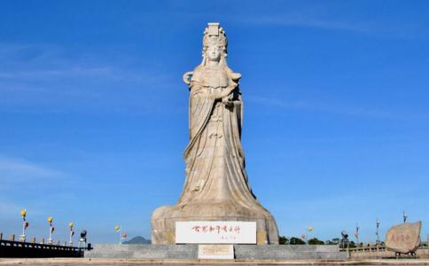

妈祖，是
谛闲法师著
宋太祖建隆元年的三月廿三日，妈祖降生于福建省莆田县林惟悫家中，林惟悫妻王氏，梦见
光阴像流水般的过去，转瞬默娘已经八岁了。八岁的默娘很懂事，她每天晨晚，不让母亲动手，就把供奉佛菩萨的香烛及供品都摆好，点燃了香，去叫母亲一同来礼佛诵经，她母亲很快乐的赞美她说：‘阿默真是好孩子，八岁的小孩，比十几岁的姐姐还懂事的多哩！’
林惟悫家中养了一只鹦鹉。有一天，默娘走进鸟笼，笼中的鹦鹉正在啄食，她看到那只有美丽羽毛的小鸟，能歌善舞，她想到了一个被囚禁的人，心中很难受的自语道：‘要是把一个能跑能跳的人关起来，那是多么的难受呢！小鸟也是有智慧的，它也能通人性，人不愿意被关起来，小鸟又怎么愿意被囚起来呢？’她望望姊姊，又望望笼中的小鹦鹉，抖一抖肩膀说：‘姊姊！我要把它放了。’姊姊急忙阻止说：‘六妹！你决不能放了它，爸爸是不允许的。’可是姊姊的话还没有说完，默娘就把鸟笼打开，让小鹦鹉自由
当林惟悫发觉小鸟不见而愤怒时，默娘很有礼貌的对她爸爸说：‘爸爸！请你老人家宽恕我，鹦鹉是我放走的。’林惟悫很
年龄随著光阴的消逝而增长，默娘已经十四岁了。菩萨化身的默娘，与凡人是不同的，她十四岁的智慧，远超过几十岁的凡人，她由爱护小动物而转移到爱护人类，她看到一个讨饭的乞丐，她看到一个站在路旁哭喊父母的孩子，甚至看到一只拖著载重车子的牛马时，都会使她心上发生同情而难过。有一天，她与五姊一同外出散步，经过一条十字的巷口，看见一群人围在一起，忽然从人群中走出一个又脏又皱的老乞丐，瞧了瞧默娘说：‘你是行善的小姑娘，给我点银子吧，我老母亲快病死了。’默娘问：‘你要多少银子呢？’老乞丐说：‘愈多愈好，我需要很多。’默娘把左手腕上的银镯拿下来，递给乞丐，问：‘这些够不够？’乞丐接了银镯，摇摇头说：‘不够，不够，还差得很多。’默娘又把右手腕上银镯也拿下来，递给乞丐，再问：‘加上这个够了吗？’乞丐还是摇摇头说：‘不够，不够，我的老母亲病很重，需要的银子很多。’在旁的张大嫂看到乞丐老是不够，觉得很生气，愤愤不平的阻止默娘说：‘这老东西一定是个骗子，六姑娘，你不要受老东西的骗，太太知道你把银镯都给这乞丐，一定会痛打你的，快把银镯要回来吧！’可是默娘反责张大嫂说：‘眼见穷人害病不救，太忍心了。’默娘见老乞丐还是不够，急得摸摸耳朵，耳环没有带。于是她伏著五姊的耳边说：‘五姊！你的手镯借给我好吗？’五姊怒责默娘：‘胡说！’默娘再向五姊恳求说：‘好姊姊！你把两个手镯借给我，回家后我一定想法加倍还给你四个手镯。’五姊听了心动，就把两支手镯取下给默娘，默娘把姊姊的银镯转递给乞丐，问道：‘再给你二支银镯，可以医好你老母亲的病了吧？’老乞丐接了默娘的银镯，笑著说：‘小姑娘，你真是个好孩子，你给的银子差不多了。’老乞丐从地上站起来，拿了木杖慢慢走著说：‘这真是个佛根没有退的孩子。’哪知老乞丐走了不远，忽然隐没不见了，大家才知道那个老乞丐是
男大当婚，女大当嫁，这是世俗凡夫的想法。默娘已由小姑娘而慢慢的变成大姑娘了，她有一个鹅蛋型的面庞，头上披著一片乌黑的秀发，两弯柳叶似的眉毛，未经人工的修饰，却非常的清秀，明亮的双眸，闪闪发出仁慈而富有智慧的光辉，真是
有一年，莆田县发生了瘟疫，染上疫病的人，不到数小时就死亡，每天都要死去数十人，默娘的妈妈，也就在这年染了瘟疫去世。在医药不发达的当时，民间流行了瘟疫，以赶鬼欺骗愚民的巫婆，就乘机而起。有一个巫婆，站在城隍庙的木台上，疯狂似的乱跳乱叫，高声大喊：‘谁要喝了我的神水，就可不染瘟疫呀！’默娘上前一看，哪是什么神水，原来是一桶污水，默娘走上木台，指著巫婆说：‘你这骗人的东西，你说这污水能
莆田县的民众，大多是捕鱼为业的渔民，默娘的父亲林惟悫，当时担任维持海上治安的巡官，负责防止海盗，保护渔民的安全，所以当渔民们出海捕鱼时，林惟悫一定要率领巡船在海上巡逻的。秋天的九月，正是捕鱼的季节，渔民们都要出海捕鱼，请求林巡官率领巡船保护，默娘听说渔民们要出海捕鱼，向外面正南方的山尖上看了看，向林惟悫说：‘爸！今天有台风，不能出海捕鱼。’林惟悫走下台阶，向渔民们恳切的说：‘今天确实要刮台风，南山头上不是起了卷云吗！万一大家有了不幸，我怎么对得起你们呢？’可是渔民们为
他们都下海去了，莆田县城走了三百多渔民，空虚了很多。真的，当渔民们出海捕鱼不到五小时，台风来了，狂暴的风雨，袭击著莆田县城，雨注像一块整体，像天一样大的掉下来，灰蒙蒙的颜色，看不到边，看不到岸，浪涛中的渔船，像失去了生命的死雀子，被浪涛激荡著，被风雨打击著，一下高，一下低，好像跌入深渊似的失去了驾驶力，渔民们狂喊起来，他们呼救的声音，和著狂风的声音，暴雨的声音浪涛的声音，是多么的凄惨啊！这时默娘从房中奔到院中，喊著女仆：‘苏珊呀！快把后房燃起大火来呀！他们一定迷失了方向。’苏珊说：‘六姑娘，我们怎能烧自己的房子呢！’默娘说：‘我们不烧自己的房子，谁烧自己的房子呢？我们要拯救数百迷失了方向的渔民，只有牺牲自己的房屋，若不点燃房屋起火，他们不知道往何处去呀！’苏珊还是不肯照著做，默娘只得自己动手，她跑到后院，用一堆干柴，把火头升起来了，在雨水中冒著浓烈的黑烟，在狂风中火头摇摆著伸向了天际，火势狂烈，火声呼呼响叫起来。默娘命苏珊把邻居的妇孺们叫出屋外，自己直向海岸奔跑。默娘奔到海边，跌倒了六次，她全身污泥，身上的衣服全湿，她喘吁著。这时狂风暴雨黑暗中的渔船，幸而看到了火光，获得了一线的光明，大家喊著说：‘那边有火光，是六姑娘给我们点燃的，火光处就是岸，我们向火光处驶，向火光处游。’大家在苦难中，获得了光明，生命有了希望。突然间，有一支断了缆的渔船，被海浪冲到岸上，冲到默娘站立的近处，默娘跃入那条破船中，给海浪卷走。数百渔民循著火光都到了岸，获得了生命，可是他们再也看不到拯救他们生命的默娘。忽然天空中出现了一道红光，观音菩萨在红光中，携著默娘向西方的天空中冉冉上升。